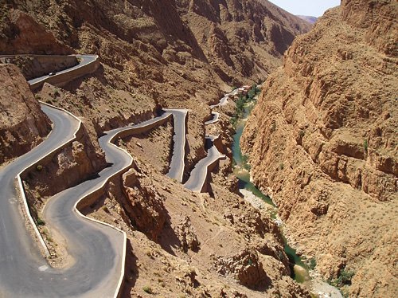
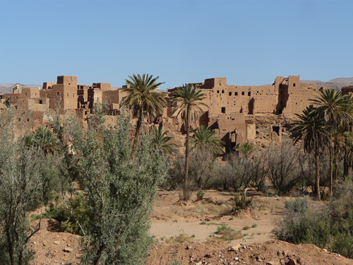
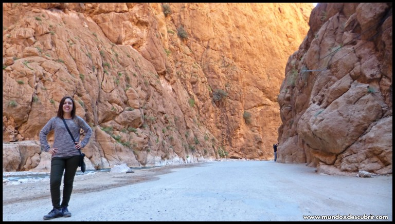

¡SaharaToursGo!
¡SaharaToursGo!
DOS MILAGROS EN FORMA DE ROCA
Al sur de Marruecos, entre el desierto y la ciudad de Ouartzazate, se hallan dos valles que discurren por el Atlas y que nos ofrecen dos maravillas de la naturaleza que nos hicieron sentir vértigo: la garganta del Dades y la garganta del Todra. Ambas compiten en belleza y espectacularidad, pero lo cierto es que tienen la suficiente personalidad como para no tener que andar comparándolas.
Viniendo de Ouartzazate y de ruta hacia el desierto de Merzouga, la primera que nos encontramos es la del Dades, cuyo camino hasta llegar a su cúspide es igual o más bello que la misma garganta.Por aquella zona, la tierra desprende un color rojizo muy peculiar que nos inunda la vista. Esta hermosa tonalidad es la misma que la de las innumerables kasbahs que vemos a medida que nos adentramos en el valle. Poco a poco, nos sumergimos en este increíble paraje donde, desgraciadamente, las construcciones de hormigón están ganando la batalla a las casitas hechas con tierra cruda.
La garganta del Dades, que toma el nombre del río que la creó, está situada en un valle curioso puesto que carece de palmeras datileras, hecho insólito en el sur de Marruecos. Cuando casi estamos llegando al punto más alto de la garganta, ante nosotros aparecen unas rocas de arenisca rojizas cuya erosión ha creado unas peculiares formas, que han sido bautizadas como “los dedos del mono”. Finalmente, una vez hemos llegado a la cima, la vista de la garganta aparece ante nosotros de forma majestuosa, ofreciéndonos una bella estampa y a la vez contradictoria, porque quizás lo que le otorga un plus de belleza es la carretera serpenteante que la recorre
También la mano del hombre ha modificado en demasía la apariencia de la garganta del Todra. Una carretera asfaltada recorre su interior, perdiendo así un poco de su carácter natural. Sin esa carretera, seguro que el paisaje sería más poético y agradable, especialmente porque un pequeño río sin apenas caudal se encarga de poner como música de fondo el balancear del agua a un ritmo hipnótico.
Pero a pesar de la manipulación del entorno, el atractivo de la garganta del Todra no deja indiferente a nadie. Sus gigantescas paredes, de casi 300 metros de altura, hacen que sea prácticamente imposible inmortalizarlas en una foto. Debido precisamente a dichas paredes, la garganta del Todra es un famoso lugar para escalar en Marruecos puesto que su geografía es muy adecuada para esta práctica
Ambas gargantas, que se pueden visitar en un mismo día, son un magnífico lugar en el que recalar en nuestro viaje a Marruecos. Pueden ser un descanso del caluroso y arenoso desierto, o una pizca de tranquilidad en medio de las visitas a ciudades como Ouartzazate o Marrakech.
GARGANTA DEL TODRA
Cuando llegas a las Garganta del Todra sabes que vas a estar en un lugar único, caminar por el sendero es toda una experiencia. Nosotros os recomendamos ir con precaución porque sin daros cuenta os empezará a doler el cuello ya que las vistas hacia lo alto son constantes e impresionantes y dejar de tomar fotos no están fácil cuando el lugar lo merece.
Las gargantas se encuentran en la zona del desierto de Marruecos y por su importancia natural son reconocidas mundialmente por ser uno de los cañones rocosos más espectaculares sobre todo para los amantes del trekking y de la escalada.
